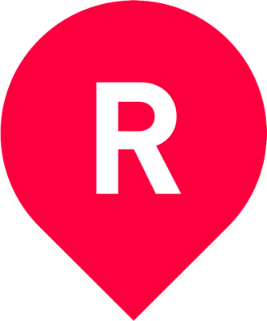
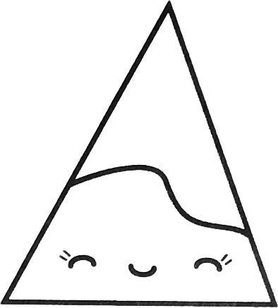

I have a crush on you, Basecamp
When I heard you were looking for a new Rails developer, it felt like discovering my high school crush was single—except hopefully less awkward. You don't know me yet, but we have a history.
We met about five years ago when I landed my first big-boy development job and you were still Classic. Rails 3 had recently been released and I was greener than a fresh stash of bananas at the grocery store. Along the way, I've tried to surf the wave of this incessant industry and might have burned out completely if I hadn't found some solace in the 37 signals that Basecamp and Rails were built on.
This came to a head last summer when I read Jamis Buck's piece on recognizing burnout. It's amazing when you read someone describing exactly how you feel: "I wasn’t overworked. But I was tired." Why am I tired? I usually have a decent amount of autonomy when it comes to technology choices on a given project, so I'm pretty content with the boring tools I use. No, it's something else.
Lack of control when something's out of control.
I am serving the man with the money. If he wants to hit turns at 100mph, so be it. If he doesn't want to get his oil changed, I'm not going to make him.
This makes caring hard.
If I care but am powerless: burnout. If I'm powerless and choose not to care: apathy. Both of those options suck, but it doesn't have to be that way.
Learning to care
Client work has been a school of hard knocks and I would be remiss to not appreciate the value in that. Not only is it a vehicle for observing the different ways people approach building software and businesses, it also exposes you to the ocean of tools available for making dreams come true.
Most of my time is happily spent with Rails and PostgreSQL, but I've also built an ecosystem with Django and MySQL that produced a few grey hairs. I've baked in custom recurring payments with both Braintree and Stripe, but using Authorize.Net felt like chopping vegetables with a dull knife. I've messed with custom maps enough to know they suck if not designed properly and have a distaste for rummaging through the AWS docs.
Whether through joy or grit, I still have to ship. I've broken more bones than I've made open source contributions, so the majority of my work is living the private repo life. Without further ado, here is some of that work.
 VUPIT BMX
VUPIT BMX
VUPIT is breaking ground in the freestyle BMX scene, providing a way for riders around the world to compete against each other and earn points that could get them invited to national competitions. At its core, riders upload their clips and enter them into competitions, which are scored by the community. Finalists are then judged by pro BMX riders.
I built the Rails API that serves the iOS and Android apps, a basic admin and judging area, and was the lead developer for the Ionic 2 based Android app. Check it out on Google Play or the App Store.
 Root Tulsa
Root Tulsa is essentially an interconnected geolocation CMS that serves as a guide to life in Tulsa for both locals and visitors. It's another Rails API backed iOS app, along with a mobile web version built with Ratchet, and of course an admin area to manage content. I built everything except the iOS app.
Through the marriage of good philosophy and a good framework, you've been impossible to ignore. What's truly remarkable though is, since defining that philosophy at the turn of the century, you've stuck to it for over seventeen years.
Sure, it's been refined with experience, but one can see through Getting Real in 2006, The Rails Doctrine, and those many blog posts ever since, the essence is still there. You're still lean. You're still focused. You still know how to say no and are still judicious with how you give your fucks—not putting profits ahead of your products or people, whether team or customers.
Your track record proves you care and I want to be a part of it.
Alternative FAQs
What's your name, son?
Brian Littmann.
Been to school?
I graduated from the University of Arkansas in 2010 with a BS in Computer Engineering. I went back for grad school but dropped out in 2012.
Whatcha been up to since?
I've been working with some good people at New Medio in Tulsa, OK.
Why no open source contributions?
Because I already spend about a third of my life in the software world and open source doesn't easily make the Feature Factory money. I love OSS, but I definitely have imposter syndrome from my lack of support in it.
I have, however, contributed some gists, documentation, and a rejected pull request, and I'm small potatoes on Stack Overflow but help out when I can.
What else do you do then?
Boulder, skate, and take boring photos.